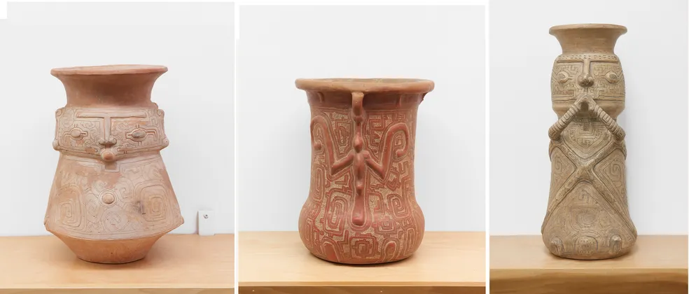
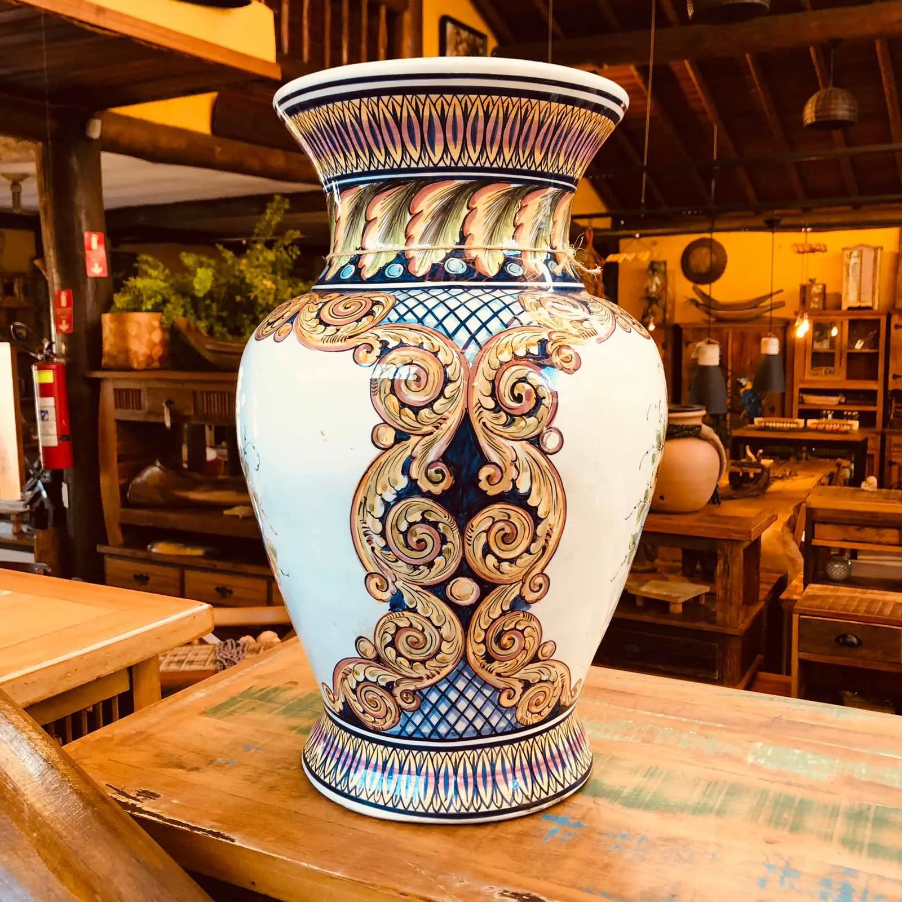
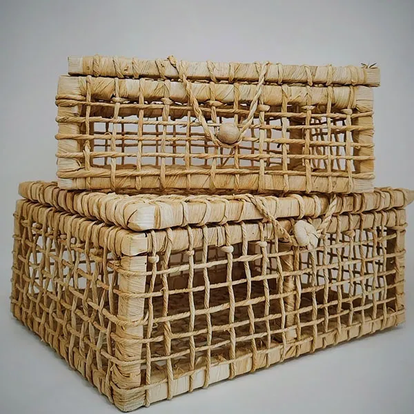
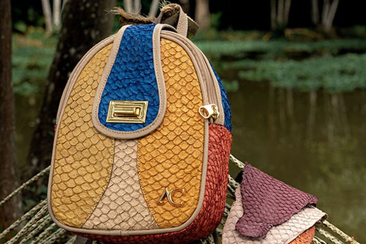

Urna de Ceramica

Esta urna de cerâmica é uma réplica das antigas urnas funerárias utilizadas pelos povos
indígenas da Ilha de Marajó. Feita à mão com argila local, a peça é decorada com os padrões
geométricos típicos da cultura Marajoara, em tons de vermelho, branco e preto. A urna, de
formato arredondado com tampa, é um exemplo impressionante da riqueza cultural e artística dos
povos amazônicos.
Vaso de ceramica

Este vaso de cerâmica foi moldado manualmente, com uma forma orgânica que realça a natureza
artesanal da peça. A superfície externa foi texturizada para imitar o aspecto da pedra natural,
e a coloração em tons terrosos acentua o seu caráter rústico. Perfeito para acomodar flores
secas ou verdes, este vaso é uma peça decorativa que traz um toque de natureza para qualquer
ambiente.
Cesta de palha de milho

Uma cesta artesanal confeccionada com palha de milho, trançada à mão com precisão e dedicação. O
design é simples, mas funcional, com alças laterais reforçadas para facilitar o transporte.
Ideal para armazenar frutas, pães ou até mesmo como peça decorativa, esta cesta reflete a beleza
e a funcionalidade do artesanato tradicional.
Bolsa de fibras naturais Tucuma

Esta bolsa é confeccionada com fibras naturais de tucumã, uma palmeira nativa da Amazônia.
Trançada à mão por artesãos ribeirinhos, a bolsa possui um padrão único e detalhado que reflete
a flora da região. O acabamento com alças em couro e fecho de semente natural dá à peça um toque
rústico e autêntico, tornando-a não só um acessório útil, mas também uma obra de arte
sustentável.